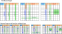

Franken/Mutant Exocet
Franken/Mutant Exocet extends Exocet's CrossLine.Place the Target on the Extended CrossLine, which determines the SLine and Companion.
If SLines are covered by two CoverLines then Exocet Locked holds.
In the extended CrossLine, the term "Cross" seems unnatural, but i follow the Standard Exocet definition and use CrossLine.
Franken/Mutant Exocet has expanded definitions for CrossLine, Target, and Companion. The requirements for establishing an Exocet are the same as a standard Exocet.
Exocet Franken/Mutant(FM) sample
拡張 CrossLine
In standard Exocet, the CrossLine is defined as follows:
- Determine the position and direction of the Base.
- CrossBand-b is determined from the Base position.
- Select CrossLine-n from CrossBand-n (n=1,2).

In Extended CrossLine, the position and direction of the Base, as well as the definition of CrossBand-b, are the same.
The Bands that form the basis of CrossLines are of three types: Cross-Band, Parallel-Band, and Block-Band. Define two CrossLines, CrossLine-1 and CrossLine-2, within different Bands.
In Extended CrossLine, multiple CrossLines may intersect. Due to the requirements for Exocet to be valid, cells where CrossLines intersect cannot contain Base candidate digits.

The following image is an example of an extend CrossLine.

Target
Place two Targets on the three CrossLines, excluding the Escape area.
There are 2 Targets / 3 CrossLines, and one CrossLine has no Target.

Companion、SLine
Companions are defined for Cross-type and Parallel-type CrossLines,
and are defined for cells that have two constraints: row/column house and block house.
Block-type CrossLines do not have companions.

The relationship between Target, Companion and SLine is the same as for
standard type Exocet elements.